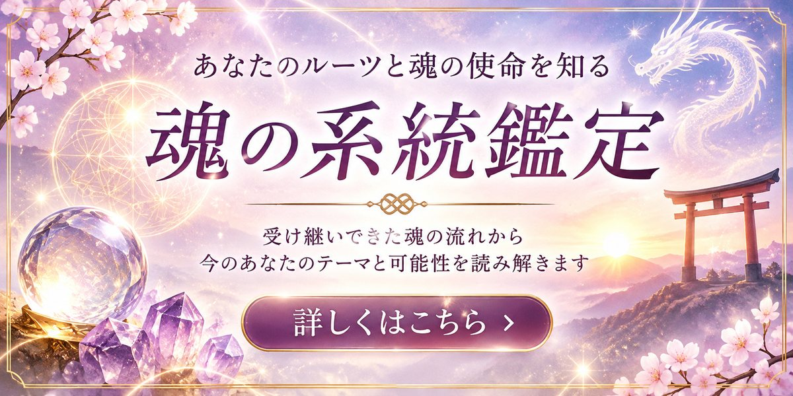
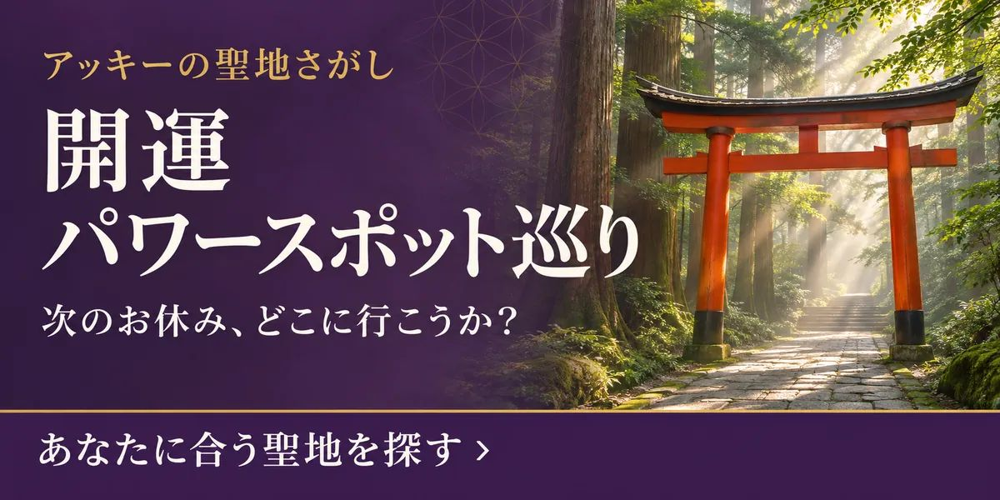
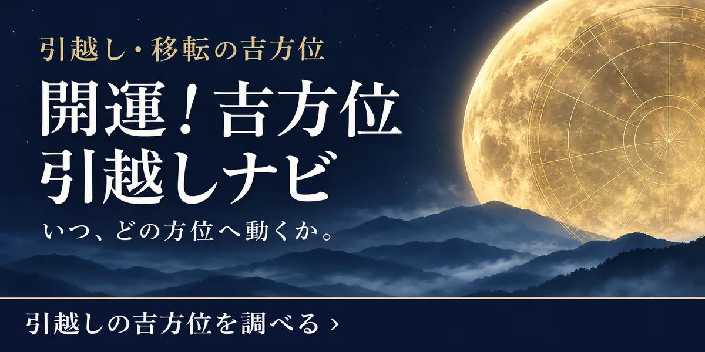
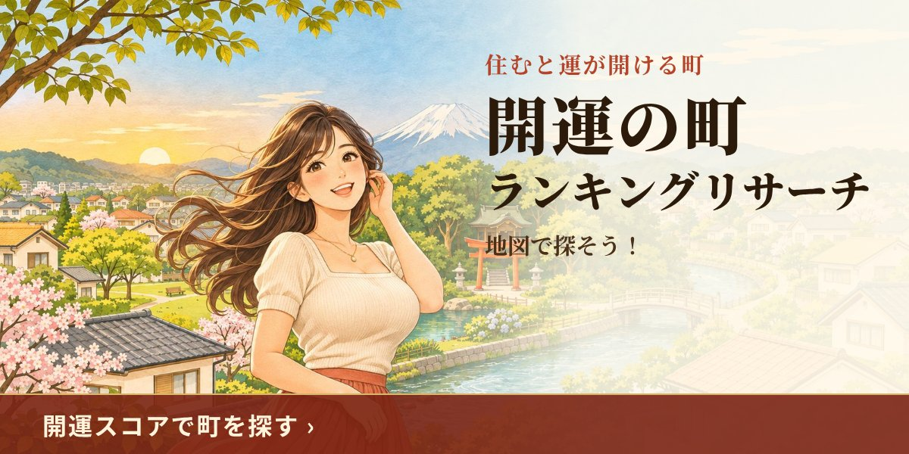
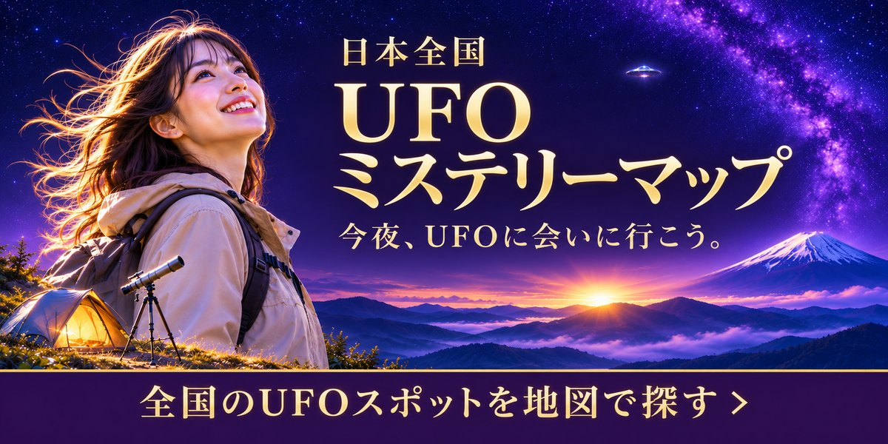
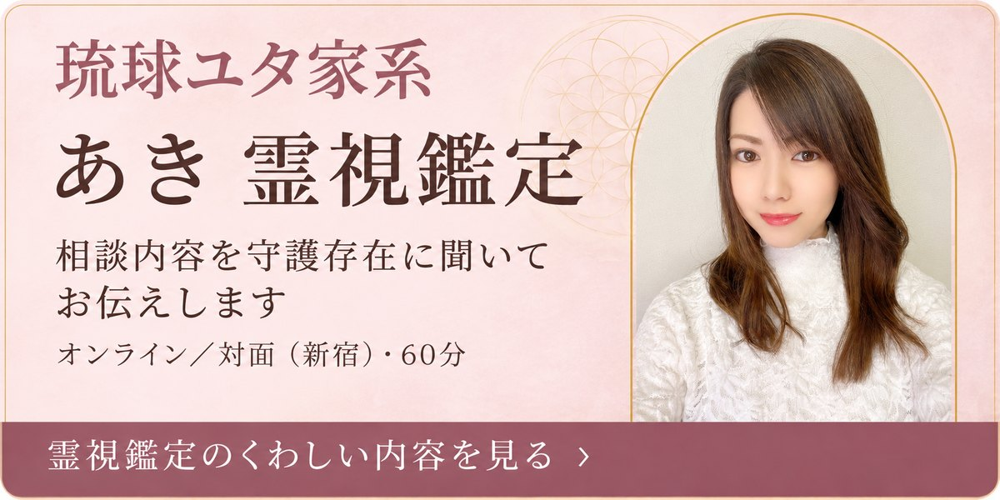

無料で使える開運ウェブサイト
どれも会員登録なしでご使用できます。生年月日などの入力内容は、お使いの端末の中だけに保存されます。

魂の系統鑑定 オリオン、プレアデス、地底の一族、神様、天使…全94種から、あなたの魂の系統と今年の運勢を鑑定します。友だちとの相性も。結果に合う天然石ブレスレットのデザインも見られます。

開運パワースポット巡り 生年月日とお住まいから、九星気学と数秘で、あなたに合う全国の神社・お寺・巨樹・滝などを探せます。ご当地グルメ図鑑つき。日本語・英語・中国語・韓国語・フランス語・スペイン語に対応しています。

開運！吉方位 引越しナビ 引越しや事務所の移転を、いつ、どの方位へ動くと良いかを九星気学で出します。方違え（かたたがえ）の手順や、引越し先が決まっていない人向けの候補エリアも。

開運の町ランキングリサーチ 住むと運が開ける町を、地図で探せます。神社、縁起の良い地名、富士山の見える場所、億当せん売り場、湧水、治安などから、町丁目ごとに「開運スコア」をつけました。東京・神奈川・埼玉・千葉・大阪・京都・兵庫・愛知・福岡に対応しています。

日本全国UFOミステリーマップ 全国のUFO目撃談のある場所、宇宙人遭遇事件、観測会、都市伝説を、出典つきで地図から探せるサイトです。
方位や相性の結果は、九星気学・数秘にもとづく目安です。開運スコアも、公開データなどから出した目安です。UFOミステリーマップの目撃談やうわさは、出典をつけて紹介しているもので、真偽を保証するものではありません。出かけるきっかけ、自分を見つめ直すきっかけとして楽しんでください。
あわせて

アッキーの発信
聖地の話、日々のことを書いています。
About Akki
Akki, the Higher-Dimensional Negotiator, is a Tokyo-based spiritual guide to Japan's sacred places. He makes free websites that help you find a place to visit, a stone to wear and a direction to move, all from your date of birth:
Japan Power Spot Journey suggests shrines, temples and other sacred places across Japan that suit you, using Nine Star Ki directions and numerology, with a photo guide to local dishes. Also in Chinese, Korean, French and Spanish.
Tamashii no Keito Kantei (soul lineage reading, in Japanese) reads which of 94 soul lineages you come from and suggests a gemstone bracelet.
Kippoui Hikkoshi Navi (lucky directions for moving, in Japanese) shows good directions and timing for moving home or relocating an office.
Kaiun no Machi Ranking Research (lucky neighborhoods, in Japanese) maps a "good fortune score" for each neighborhood in Tokyo, Osaka, Kyoto and other areas, based on shrines, auspicious place names, views of Mt. Fuji and more.
Results are a fun guide, not predictions.